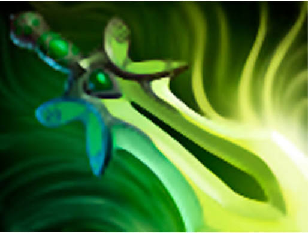
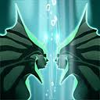
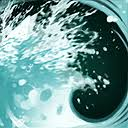
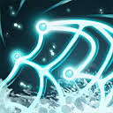
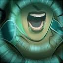

Исторический показатель эффективности
Абсолютный мировой рекорд по скорости добычи золота в минуту. Данный результат достигнут за счет построения идеальных таймингов сплит-пуша тремя независимыми группами иллюзий и непрерывного контроля ключевых зон вражеского леса без потери темпа.
Сборка артефактов Core Build

Power Treads
Основа для статов иллюзий. Приоритетное переключение на ловкость для повышения DPS.

Manta Style
Фундаментальный предмет. Активация строго для рассредоточения давления по линиям.

Bloodthorn
Обеспечивает высокий соло-килл потенциал и мгновенный фокус критически важных целей.
Heart of Tarrasque
Ключевой фактор выживаемости иллюзий в затяжной осаде (High-ground push).

Butterfly
Финальный артефакт на выживаемость и урон. В отличие от активного сплит-пуша Manta Style, дает пассивное масштабирование DPS за счет +20% к базовой скорости атаки и 35% уклонения, защищая иллюзии от физического урона до появления у врагов MKB.
Приоритет способностей Skill Progression

Mirror Image MAX 1
Основа экономики. С учетом врожденных способностей позволяет удерживать колоссальный темп фарма.

Rip Tide MAX 2
Пассивный урон по области. В текущем патче механика требует меньше ударов для автоматического срабатывания.

Ensnare Lvl 1
Инструмент фиксации врага. Покупка Aghanim's Scepter теперь накладывает эффект Истощения (Break), полностью отключая пассивки цели.

Song of the Siren ULT
В актуальном балансном обновлении базовый кулдаун способности снижен на ранних уровнях прокачки.